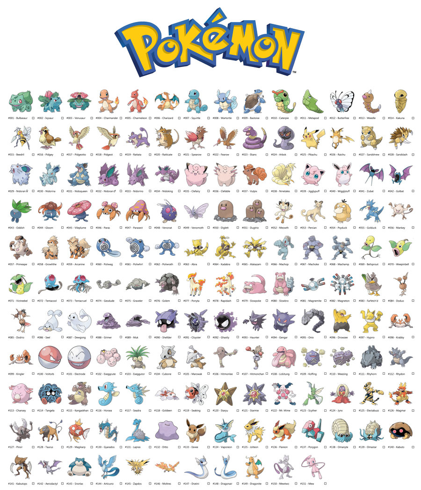
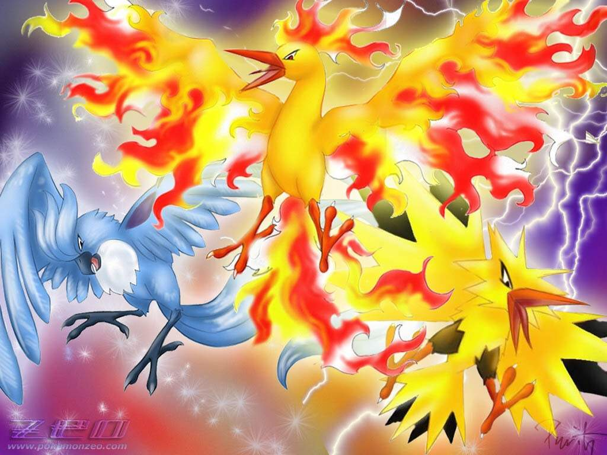

GameFreak released 4 games consiting of only Generation 1 pokemon, Red, Green, Blue, and Yellow. The total amount of pokemon in the pokedex was 151. The starting pokemon you could choose were Bulbasaur, Charmander and Squitle. Generation 1 introduced the most moves to the series adding 165. Also this is the only generation that used normal pokemon as the mascots on the cover.

